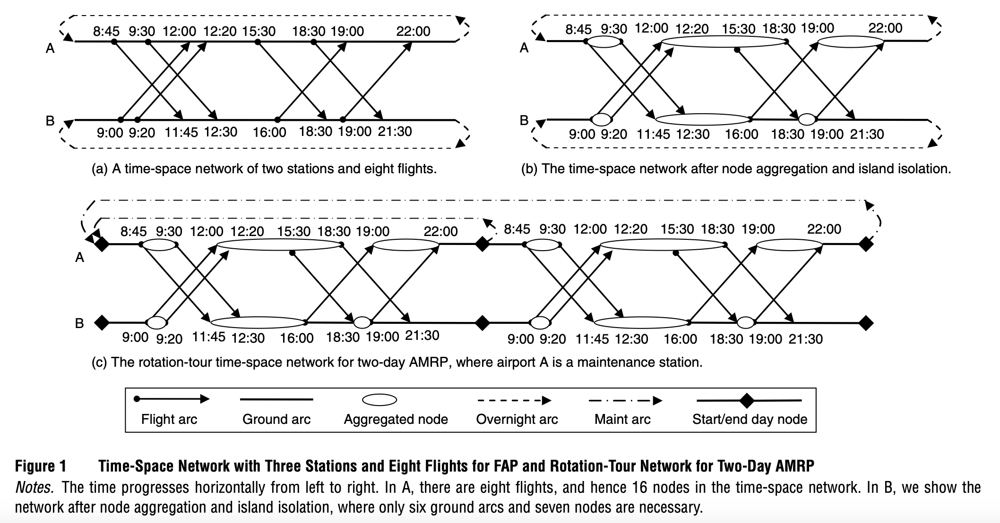

航班分配问题（Fleet Assignment Problem）¶
需要看MP上一篇很经典的文章：Hane et al., “The fleet assignment problem: Solving a large-scale integer program”, Mathematical Programming, 70 (1995) 211-232。也可以参考梁哲老师的公众号文章。时空网络模型、最大化利润。
任务是，给定一个飞行时刻表和可行的飞机。你需要决定哪些类型的飞机执飞哪些航段（flight segment）来最大化盈利或最小化成本，同时满足一系列约束：需求、收益、成本、飞行可行性、飞机维护和运营约束等。
我们把问题刻画成大规模混合整数线性规划，基于多商品网络流模型+侧约束（side constraints）。问题被定义在一个时间拓展的网络上（Time Expanded Network）。
Mathematical Formulation¶
Sets:¶
- \( C \): Set of cities
- \( F \): Set of available fleets，怎么理解呢，就是一个公司可能有 A330，A320，Boeing 777，Boeing 737 max 四种飞机，那么每一种飞机就构成了一个机队。
- \( S(f) \): Number of aircraft available in fleet \( f \)
- \( L \): Set of flights
- \( H \): Set of required flight connections (through-flights)
我们的网络中的节点，通过 \({f, o, t}\) 进行枚举，其中 \(f \in F, o \in C, t\) 是在 \(o\) 点起飞或者降落点时间
Decision Variables:¶
- Binary assignment variables:
是否由机队 \(f\) 执飞航班 \(i\)。当然作为初学者似乎更应该写成 \(x_{f,o,d,t}\)，即，机队 \(f\) 执飞从 \(t\) 时刻 在 \(o\) 城市起飞降落在 \(d\) 城市的航班。虽然这样疑似有一些冗长，但是相信我，你会需要一种方式来定义 flight 的.
- Continuous variables (ground arcs) representing number of aircraft on the ground:
代表了在 \(t,t^+\) 时段内，在 \(o\) 地地面上的 机型 \(f\) 的飞机数量。模型中用到。你或许会发现为什么这是个continuous。事实上我们已经规定了X是整数了，定下来了 \(X\)，余下的 \(Y\) 应该也是整数。
Objective Function:¶
- Minimize total assignment cost: 最小化成本。
where \( c_{fi} \) captures:
- Fuel and operating cost of assigning fleet \( f \) to flight \( i \)
- Costs related to lost revenue ("spill") when demand exceeds aircraft capacity
这里的参数 \(c_{fi}\) 包含了两个含义：
- 由机队 \(f\) 执飞航班 \(i\) 的油料和运营成本；
- 如果需求超过了飞机的载重，此时供不应求，因此而损失的收益（意味着此时没有派够大的飞机来，丢失了一部分乘客）。
Constraints:¶
- Cover Constraints:
Ensure every flight is covered exactly once: 每个航班被一个机队覆盖；
- Balance Constraints (Flow conservation):
Maintain aircraft flow continuity at each station:
一个看起来不那么好理解的流平衡：在任何时刻，对一个站点的每一个机队而言，我们向前看，回溯到最后一个有飞机降落的时刻 \(t^{-}\) ，向后回溯到第一个有飞机起飞的时刻 \(t^{+}\)。那么，对这个机队 \(f\) 而言，在这个城市 \(o\)，所有其他城市在 \(t^{-}\) 流入该城市的的飞机，加上从 \(t^{-}\) 到 \(t\) 时刻在地上的该型飞机，等于 \(t\) 到 \(t^{+}\) 时刻内在地上的该型飞机，加上在 \(t^{+}\) 时刻飞走到其他城市的该型飞机。
- Required-through Constraints:
Force certain pairs of flights to be operated by the same fleet:某些航班必须由同一个机队进行服务。
- Fleet Size Constraints:
Ensure the fleet size limit isn't exceeded: 限制机队规模
Variable Bounds:¶
Binary conditions:
Non-negativity:
Computational Techniques:¶
Due to the large problem scale, several advanced computational techniques are employed:
- Aggregation and Preprocessing: Reduce problem size by consolidating nodes and variables.
- Interior-Point Algorithm: Solve LP relaxations efficiently.
- Dual Simplex Algorithm with Steepest Edge Pricing: Effective for highly degenerate problems.
- Perturbation Techniques: Adjust objective coefficients to reduce degeneracy and expedite convergence.
- Branch-and-Bound Enhancements: Customized branching rules (e.g., branching on cover rows) improve integer solution finding.
Results and Performance:¶
- Implemented solutions are highly efficient, solving large-scale instances (~2500 flights, 150 cities, 11 fleets) typically within one hour.
- Optimality gaps are typically less than 0.02%, demonstrating high accuracy and efficiency.
Conclusion:¶
The Fleet Assignment Problem is efficiently solvable by sophisticated mathematical programming techniques, which have proven successful in practice for large airlines. Future enhancements can incorporate more complex constraints such as crew scheduling, maintenance operations, and airport-specific limitations.
Summary of Equations:¶
- Objective:
- Cover constraint:
- Balance constraint:
- Required-through constraint:
- Fleet size constraint:
- Bounds and integrality:
周度航班维修航线规划与 FAP¶
Z. Liang*, W. A. Chaovalitwongse, A network-based model for the integrated weekly aircraft maintenance routing and fleet assignment problem, Transportation Science, vol 47(4), pages 493-507, 2013.
1. 基础模型：周轮换巡游网络模型 (WRTNM)¶
该模型用于单独求解周飞机维修航线问题 (WAMRP)。
1.1 决策变量 (Decision Variables)¶
| 变量符号 | 类型 | 含义描述 |
|---|---|---|
| \(x_{fp}\) | Binary (0-1) | 若航班 \(f\) 在第 \(p\) 天开始的网络 \(S_p\) 中被执飞，则为 1；否则为 0。 |
| \(y_{hp}\) | Binary (0-1) | 若连接弧 \(h\)（短连接惩罚弧或直飞收益弧）在第 \(p\) 天开始的网络 \(S_p\) 中被使用，则为 1；否则为 0。 |
| \(z_{mpd}\) | Integer | 在第 \(p\) 天结束时，于维修站 \(m\) 经过 \(d\) 天飞行后进入维修弧 \(g_{mpd}\) 的飞机数量。 |
| \(w_l\) | Integer | 地面弧 \(l\) 上停场的飞机数量。 |

1.2 约束条件与目标函数 (Constraints & Objective)¶
目标函数：最小化总惩罚成本 $$ \min \sum_{p \in {1,\dots,7}} \sum_{h \in H_p} c_h y_{hp} \quad (1) $$
约束条件：
-
航班覆盖约束 (Flight Coverage) 每个航班在周计划中必须被覆盖且仅被覆盖一次。 $$ \sum_{p: f \in F_p} x_{fp} = 1 \quad \forall f \in F \quad (2) $$
-
流量平衡约束 (Flow Balance) 每个节点 \(n\) 的流入飞机数等于流出飞机数（包含航班弧、维修弧、连接弧和地面弧）。
(注：原文中 \(\alpha, \beta, \gamma\) 为指示参数，表示弧是否起始或终止于节点 \(n\))
- 维修容量约束 (Maintenance Capacity)
每个维修站 \(m\) 在第 \(p\) 天的维修飞机数不超过容量 \(Q_{mp}\)。
- 机队规模约束 (Fleet Size) 在计数时刻 \(O\)，所有弧上的飞机总数不超过机队规模 \(K\)。
- 变量域约束 (Variable Domain)
2. 集成模型：周机队分配与维修航线集成 (Integrated WFAP + WAMRP)¶
该模型同时求解周机队分配问题 (WFAP) 和周飞机维修航线问题 (WAMRP)。
2.1 决策变量 (Decision Variables)¶
| 变量符号 | 类型 | 含义描述 |
|---|---|---|
| \(x^i_{fp}\) | Binary (0-1) | 若航班 \(f\) 被分配给机队 \(i\) 且在第 \(p\) 天开始的网络 \(S^i_p\) 中被执飞，则为 1；否则为 0。 |
| \(z^i_{mpd}\) | Integer | 对于机队 \(i\)，在第 \(p\) 天结束时，于维修站 \(m\) 经过 \(d\) 天飞行后进入维修弧 \(g^i_{mpd}\) 的飞机数量。 |
| \(w^i_l\) | Integer | 对于机队 \(i\)，地面弧 \(l\) 上停场的飞机数量。 |
(注：集成模型变量列表中未显式列出连接弧变量 \(y\)，其逻辑隐含在流量平衡或目标函数简化中)
2.2 约束条件与目标函数 (Constraints & Objective)¶
目标函数：最大化总利润
(注：\(r_{if}\) 为将航班 \(f\) 分配给机队 \(i\) 的收益)
约束条件：
- 航班分配约束 (Flight Assignment) 每个航班必须被分配给且仅分配给一个机队。
- 流量平衡约束 (Flow Balance) 对于每个机队 \(i\) 的网络中的每个节点 \(n\)，流入等于流出。
- 维修容量约束 (Maintenance Capacity) 对于每个飞机家族 \(j\)（包含多个机队），维修站 \(m\) 在第 \(p\) 天的总维修容量限制。
- 机队规模约束 (Fleet Size) 每个机队 \(i\) 使用的飞机数不超过其规模 \(K_i\)。
- 变量域约束 (Variable Domain)
符号说明 (Notations Key)¶
| 符号 | 含义 |
|---|---|
| \(F\) | 周计划航班集合 |
| \(I\) | 机队集合 (Integrated Model) |
| \(M\) | 维修站集合 |
| \(D\) | 两次维修间允许的最大天数 |
| \(p\) | 一周中的第 \(p\) 天 (\(1 \dots 7\)) |
| \(S_p\) | 从第 \(p\) 天开始的 \(D\)-天时间空间网络 |
| \(K\) / \(K_i\) | 机队规模 (总规模 / 机队 \(i\) 规模) |
| \(Q_{mp}\) / \(Q_{jmp}\) | 维修容量 (站 \(m\) 天 \(p\) / 家族 \(j\) 站 \(m\) 天 \(p\)) |
| \(\alpha, \beta, \gamma\) | 指示参数 (Indicator Parameters)，表示弧与节点的关联关系 (起始/终止) |
| \(O\) | 计数时刻 (Count Time)，用于计算机队规模 |